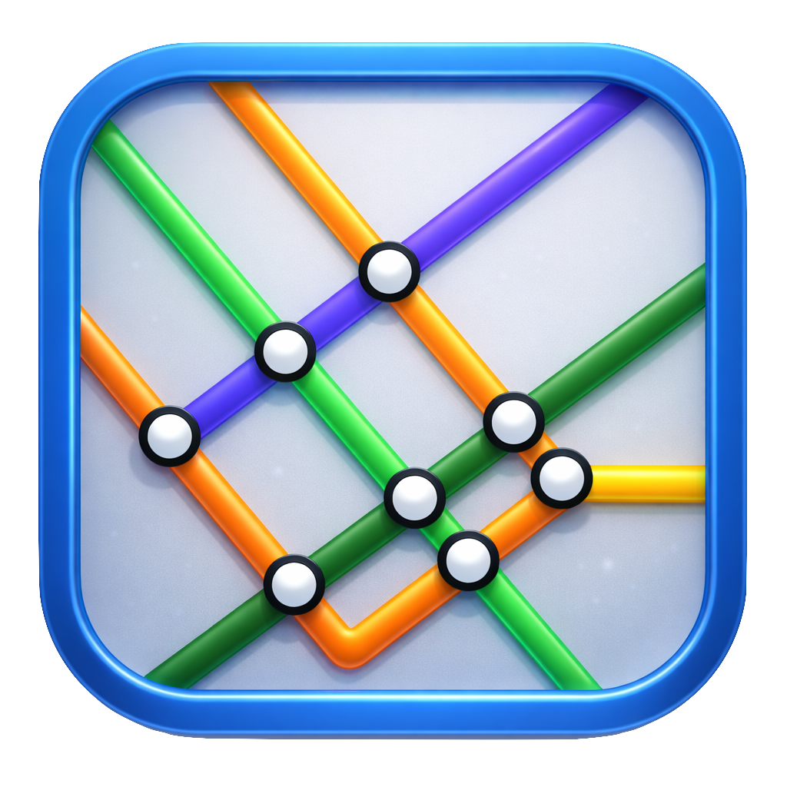

PlansDécouvrez des plans détaillés représentant divers projets de transport collectif pour la région de Montréal et son impact urbain.
Le Plan d'Urbanisme et de Mobilité (PUM) 2050 présente entre autres une vision 2040 et une vision 2050 avec une carte incluant des lignes de tram, SRB et prolongements de Métro qui devraient être prioritarisés.
Voir le plan →Dans la plateforme 2025 de Projet Montréal, 2 prolongements de métro sont proposés incluant des extensions majeures du réseau existant.
Voir le plan →Dans la plateforme 2025 de Projet Montréal, 11 axes sont identifiés comme futurs tramway ou SRB légers faisant partie du Réseau Express Bus (REB) avec services rapides et fréquents.
Voir le plan →